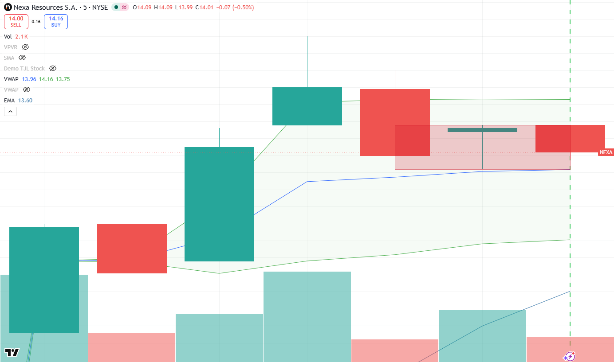
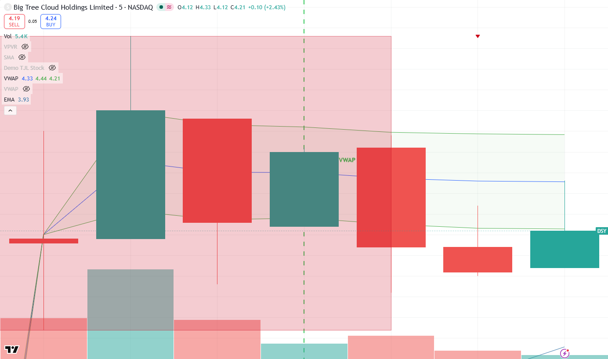
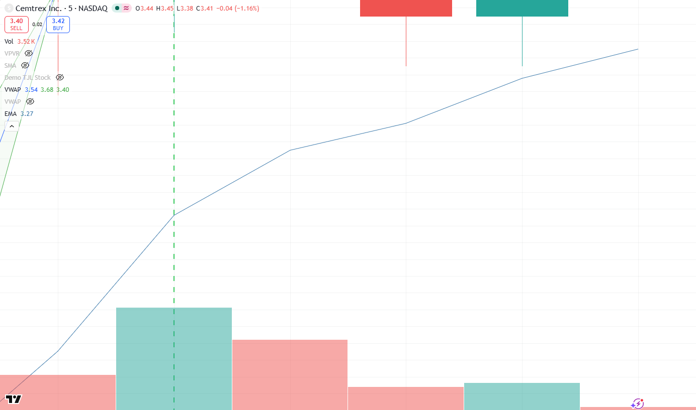
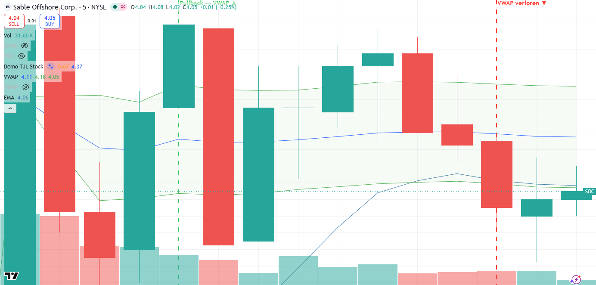

📊 Trading Control
OpenUpdated 2026-08-31 12:00 ET · auto-refresh 2 min
🖥️ Watchboard
Alle movers in één oogopslag. Markt: SPY -0.53% · tegenwind
🔴 Fade-short B WETO <VWAP · small · B BRNX <VWAP · small · B NEOV <VWAP · small
⚪ Neutraal AEHL >VWAP · small · MOVE <VWAP · small · NCRA >VWAP · small
📚 Hoe lees ik dit?
Dit dashboard signaleert kansen die het automatisch scant — geen koopadviezen. Het is gebouwd rond de strategieën van HumbledTrader (uit haar eigen video's):
📈 Haar strategieën in het kort
- Gap & Go (long) — een small/mid-cap die op vers nieuws gapt. Ze koopt de pullback naar VWAP die houdt (de dip), niet de breakout. Instaptypes: break van de premarket-piek op een terugtest, 1e/2e pullback (bull-flag bij VWAP), red-to-green (ochtenddip die terugkeert naar groen).
- Fade (short) — een grote gap die faalt en VWAP verliest ('fails VWAP → wegwezen'). Het tegenovergestelde spel op dezelfde gapper.
- Vuistregels — alleen de eerste ~1–2 uur na de opening; max 1–2 setups/dag; vermijd overextended (>15% premarket gelopen); stop ~4%, neem winst in stukjes, 'breakout or bail' (loopt het niet door → eruit).
Hoe de kaarten daarop aansluiten:
- Gap screener — wat gapt er vandaag op nieuws (de jachtgrond), met cap-klasse.
- VWAP-watch — vertaalt dat live: VWAP-pullback = haar instap (koop de dip); Long (extended) = op de top (najagen = risico); fade-short = gap die VWAP verloor. Met SPY-marktcontext (rugwind/tegenwind).
- Momentum-setups (TJL) — vaste tickers; groen 'setup actief' = alle voorwaarden kloppen nú.
Wat traders hier doorgaans mee doen (educatief):
- De lijst als watchlist gebruiken en een koersalert zetten i.p.v. meteen handelen.
- Op bevestiging wachten — een gap die al ver gelopen is, niet achternajagen.
- Eerst op papier oefenen (paper trading) om het ritme te leren zonder risico.
- Vooraf bepalen hoeveel je bereid bent te verliezen per idee.
⚠️ Educatief, geen financieel advies. Handelen brengt risico op verlies met zich mee.
📈 Gap screener
Aandelen die vóór de opening al flink bewegen t.o.v. de slotkoers van gisteren. Grote sprong + hoog volume = ongewone activiteit, vaak door nieuws.
17 kandidaten · gap≥4.0%
| Sym | Gap | RVol | Grootte | Reden/nieuws |
|---|---|---|---|---|
| AEHL | +90.96% | 198.04x | $0.03B small | Bitcoin Treasury Strategy Generates $190,000 Gain as Antelop |
| ↳ Grote sprong omhoog, ongewoon druk (198.04× normaal) — sterke, meestal nieuwsgedreven beweging. | ||||
| MOVE | +30.55% | 87.31x | $0.31B small | Corvex Inc (MOVE) (Q2 2026) Earnings Call Highlights: AI Inf |
| ↳ Grote sprong omhoog, ongewoon druk (87.31× normaal) — sterke, meestal nieuwsgedreven beweging. | ||||
| NCRA | +26.46% | 34.98x | $0.01B small | Nocera Expands AI Infrastructure Strategy with New 50/50 Ene |
| ↳ Grote sprong omhoog, ongewoon druk (34.98× normaal) — sterke, meestal nieuwsgedreven beweging. | ||||
| WETO | +26.09% | 33.37x | $0.01B small | Dear Wetour Robotics Stock Fans, Mark Your Calendars for Aug |
| ↳ Grote sprong omhoog, ongewoon druk (33.37× normaal) — sterke, meestal nieuwsgedreven beweging. | ||||
| BRNX | +15.68% | 4.42x | - small | — |
| ↳ Grote sprong omhoog, ongewoon druk (4.42× normaal) — sterke, meestal nieuwsgedreven beweging. | ||||
| NEOV | +14.37% | 5.76x | $0.23B small | NeoVolta (NEOV) Stock Sees Fair Value Lift As Analysts Weigh |
| ↳ Grote sprong omhoog, ongewoon druk (5.76× normaal) — sterke, meestal nieuwsgedreven beweging. | ||||
| SY | +12.92% | 84.24x | $0.25B small | So-Young International Q2 Earnings Call Highlights |
| ↳ Grote sprong omhoog, ongewoon druk (84.24× normaal) — sterke, meestal nieuwsgedreven beweging. | ||||
| SAIC | +11.46% | 4.01x | $5.52B mid | Why SAIC Stock Is Rising Today |
| ↳ Grote sprong omhoog, ongewoon druk (4.01× normaal) — sterke, meestal nieuwsgedreven beweging. | ||||
| DPRO | +11.09% | 10.55x | $0.19B small | — |
| ↳ Grote sprong omhoog, ongewoon druk (10.55× normaal) — sterke, meestal nieuwsgedreven beweging. | ||||
| WFF | +9.3% | 4.97x | $0.09B small | — |
| ↳ Grote sprong omhoog, ongewoon druk (4.97× normaal) — sterke, meestal nieuwsgedreven beweging. | ||||
| TITN | +9.18% | 3.58x | $0.48B small | — |
| ↳ Grote sprong omhoog, ongewoon druk (3.58× normaal) — sterke, meestal nieuwsgedreven beweging. | ||||
| SHMD | +7.82% | 1.52x | $0.21B small | — |
| ↳ Grote sprong omhoog, drukker dan normaal (1.52×). | ||||
| BW | +7.68% | 1.57x | $1.1B small | — |
| ↳ Grote sprong omhoog, drukker dan normaal (1.57×). | ||||
| CANG | +7.17% | 2.28x | $0.09B small | — |
| ↳ Grote sprong omhoog, ongewoon druk (2.28× normaal) — sterke, meestal nieuwsgedreven beweging. | ||||
| PFSA | +5.8% | 2.15x | - small | — |
| ↳ Flinke sprong omhoog, ongewoon druk (2.15× normaal) — sterke, meestal nieuwsgedreven beweging. | ||||
| PURR | +4.65% | 2.39x | $2.31B mid | — |
| ↳ Flinke sprong omhoog, ongewoon druk (2.39× normaal) — sterke, meestal nieuwsgedreven beweging. | ||||
| GME | +4.48% | 2.26x | $8.37B mid | — |
| ↳ Flinke sprong omhoog, ongewoon druk (2.26× normaal) — sterke, meestal nieuwsgedreven beweging. | ||||
Gap = verschil met gisteren · RVol = volume vs normaal (>1 = drukker) · Grootte = marktwaarde bedrijf
🌀 VWAP-watch (live movers)
Live check op de dag-gappers t.o.v. VWAP (de gele lijn uit de video). VWAP-pullback = teruggezakt naar VWAP en houdt het — dít is HumbledTrader's eigenlijke instap (koop de dip, niet de top). Long (extended) = op de dagtop, momentum maar najagen is risico. Fade-short = grote gap die VWAP verloor. Signalen, geen koopadvies.
Markt: SPY -0.53% · tegenwind (handel je mét of tegen de markt in?)
AEHL small-cap $6.95 · VWAP $6.87Neutraal
boven VWAP
MOVE small-cap $11.22 · VWAP $13.73Neutraal
onder VWAP
NCRA small-cap $2.79 · VWAP $2.64Neutraal
boven VWAP
WETO small-cap $10.59 · VWAP $10.86Fade-short
gapte +85.14%, verloor VWAP, teruggevallen van dagtop
BRNX small-cap $4.29 · VWAP $4.48Fade-short
gapte +10.28%, verloor VWAP, teruggevallen van dagtop
NEOV small-cap $3.98 · VWAP $4.03Fade-short
gapte +19.16%, verloor VWAP, teruggevallen van dagtop
📓 Trading diary
Elke gesignaleerde setup als entry (plan) + achteraf-analyse (doel/stop geraakt, les). Klik een afbeelding om te vergroten.
NEXA VWAP-pullback A 🔴 LOW2026-07-02 10:05 ET
📋 Plan: entry $14.02 · stop $13.82 · doel $14.35 · R:R 1:1.7
🔎 Achteraf: 🛑 Stop geraakt (-1.4%) — Invalidatie (VWAP/structuur niet gehouden). Stop gerespecteerd = discipline; kleine controleerbare loss.

DSY VWAP-pullback B 🔴 LOW2026-07-02 10:01 ET
📋 Plan: entry $4.12 · stop $4.06 · doel $4.68 · R:R 1:9.3
🔎 Achteraf: 🛑 Stop geraakt (-1.5%) — Invalidatie (VWAP/structuur niet gehouden). Stop gerespecteerd = discipline; kleine controleerbare loss.

CETX VWAP-pullback B 🔴 LOW2026-07-02 09:58 ET
📋 Plan: entry $3.4 · stop $3.25 · doel $4.05 · R:R 1:4.3
🔎 Achteraf: ➖ Geen hit (max +12.9% / -3.5%) — Geen follow-through — mogelijk overextended of laag volume. Niet forceren; wachten op betere setup.

SOC Fade-short2026-07-01 10:43 ET
📋 Plan: entry $4.03 · stop $4.16 · doel $2.88 · R:R 1:8.8
🔎 Achteraf: ➖ Geen hit (max +1.5% / -3.0%) — Geen follow-through — mogelijk overextended of laag volume. Niet forceren; wachten op betere setup.

SDOT VWAP-pullback2026-07-01 10:08 ET
📋 Plan: entry $45.56 · stop $45.06 · doel $53.0
🔎 Achteraf: 🎯 Doel geraakt (+16.3%) — Plan werkte — instap bij VWAP hield, doel behaald. Zo scale je uit in kracht.

CANF Fade-short2026-07-01 10:04 ET
📋 Plan: entry $4.89 · stop $5.29 · doel $2.72 · R:R 1:5.4
🔎 Achteraf: ➖ Geen hit (max +12.9% / -5.1%) — Geen follow-through — mogelijk overextended of laag volume. Niet forceren; wachten op betere setup.

SOC VWAP-pullback2026-07-01 09:59 ET
📋 Plan: entry $4.07 · stop $3.93 · doel $4.29 · R:R 1:1.7
🔎 Achteraf: ➖ Geen hit (max +4.4% / -2.7%) — Geen follow-through — mogelijk overextended of laag volume. Niet forceren; wachten op betere setup.

EHGO Fade-short2026-07-01 09:57 ET
📋 Plan: entry $2.18 · stop $2.96 · doel $1.12 · R:R 1:1.4
🔎 Achteraf: ➖ Geen hit (max +5.0% / -3.2%) — Geen follow-through — mogelijk overextended of laag volume. Niet forceren; wachten op betere setup.

TC Fade-short2026-07-01 09:53 ET
📋 Plan: entry $4.98 · stop $6.25 · doel $1.49 · R:R 1:2.7
🔎 Achteraf: ➖ Geen hit (max +24.9% / -1.2%) — Geen follow-through — mogelijk overextended of laag volume. Niet forceren; wachten op betere setup.

EHGO VWAP-pullback2026-07-01 09:50 ET
📋 Plan: entry $2.45 · stop $2.21 · doel $2.6 · R:R 1:0.6
🔎 Achteraf: 🛑 Stop geraakt (-9.8%) — Invalidatie (VWAP/structuur niet gehouden). Stop gerespecteerd = discipline; kleine controleerbare loss.

JEM Fade-short2026-07-01 09:45 ET
📋 Plan: entry $7.94 · stop $8.62 · doel $3.02 · R:R 1:7.2
🔎 Achteraf: 🛑 Stop geraakt (-8.6%) — Invalidatie (VWAP/structuur niet gehouden). Stop gerespecteerd = discipline; kleine controleerbare loss.

JEM Fade-short2026-06-30 13:40 ET
📋 Plan: entry $4.28 · stop $4.6 · doel $3.13 · R:R 1:2.0
🔎 Achteraf: 🔴 Fade voltrok zich (intraday ~$4,88 → $3,00) — VWAP verloren + herhaald falen reclaim = verkopers in control. Postmarket herstel = signalen zijn tijdsgevoelig.

📈 Backtest / edge-tracker
📈 11 afgeronde setups · 20.0% win · expectancy 0.99R
Bewijst de edge: win-rate + expectancy (R) per grade/conviction over álle setups. W/L/– = wins/losses/geen-hit.
Per type (long vs fade)
| n | W/L/– | win% | exp | gem.MFE | |
|---|---|---|---|---|---|
| 🔴 Fade-short | 5 | 0/1/4 | 0.0% | -0.2R | 8.9% |
| 🟢 Long-pullback | 6 | 1/3/2 | 25.0% | +1.98R | 7.4% |
Per grade
| n | W/L/– | win% | exp | gem.MFE | |
|---|---|---|---|---|---|
| ? | 8 | 1/2/5 | 33.3% | +1.61R | 8.1% |
| A | 1 | 0/1/0 | 0.0% | -1.0R | 0.0% |
| B | 2 | 0/1/1 | 0.0% | -0.5R | 11.9% |
Per conviction
| n | W/L/– | win% | exp | gem.MFE | |
|---|---|---|---|---|---|
| ? | 8 | 1/2/5 | 33.3% | +1.61R | 8.1% |
| LOW | 3 | 0/2/1 | 0.0% | -0.67R | 7.9% |
⭐ A-setup vs overig
| n | W/L/– | win% | exp | gem.MFE | |
|---|---|---|---|---|---|
| overig | 11 | 1/4/6 | 20.0% | +0.99R | 8.1% |
🔬 Fades (data-only, niet getraded) — valideert de fade-ban: n=4 · win 0.0% · exp -0.5R · W/L/– 0/2/2
🎯 Momentum-setups (TJL)
Een momentum-strategie: zoekt een aandeel in een opgaande trend dat uitbreekt naar nieuwe highs op sterk volume. Vaste watchlist; een 'setup' ontstaat pas als álle voorwaarden kloppen.
AMD $465.51Wordt gevolgd
Nog geen setup — voldoet niet aan de trend/uitbraak-voorwaarden.
Nog nodig: boven gisteren's hoogste koers, boven de intraday-trendlijn, boven de premarket-piek, op of nabij de dagtop, volume ≥ 1.5× normaal
NVDA $219.39Wordt gevolgd
Nog geen setup — voldoet niet aan de trend/uitbraak-voorwaarden.
Nog nodig: boven gisteren's hoogste koers, op of nabij de dagtop, volume ≥ 1.5× normaal
MU $936.09Wordt gevolgd
Nog geen setup — voldoet niet aan de trend/uitbraak-voorwaarden.
Nog nodig: boven gisteren's hoogste koers, boven de intraday-trendlijn, boven de premarket-piek, op of nabij de dagtop, volume ≥ 1.5× normaal
🪙 Crypto pairs
live: none
| Pair | Freq | Win | Edge |
|---|---|---|---|
| AAVE-USD | 0.08/mo | 100.0% | +29.87% |
| UNI-USD | 0.99/mo | 50.0% | +3.65% |
| SOL-USD | 0.33/mo | 66.7% | +6.69% |
| BNB-USD | 0.74/mo | 55.6% | +2.76% |
| INJ-USD | 0.58/mo | 60.0% | +2.9% |
| DOGE-USD | 0.33/mo | 66.7% | +1.78% |
| NEAR-USD | 0.58/mo | 66.7% | +0.9% |
| BTC-USD | 0.49/mo | 66.7% | +0.68% |
TV Scanner pipeline · refresh by re-running build_dashboard.py